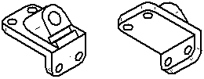

Defining drawing standards
The first time you load Solid Edge at your company, you should consider setting standards to apply to the drawings you create in the Draft environment.
Although you can change the settings in the Draft environment to meet company requirements each time you create a draft document, you will be more productive if you set up one or more draft documents with the standard settings you need. You can then use these documents as templates for all of your drawings, making it easier for all users to conform to company standards.
When setting your drawing standards, consider the following:
-
Background sheet graphics for your drawing borders
-
The projection angle you want
-
The thread depiction standard you want
-
The edge display symbology you want for the drawing views
-
The standard you want for the dimension style
-
The fonts you want for text on your drawings
Creating new documents
When you use the Document option, the working units for the new document are based on the option you selected when you loaded the software. For example, if you selected the Metric option, the working units will be metric; if you selected the English option the working units will be English.
The advantage to this approach is that graphics for the background sheets already exist in the new document. You can customize these graphics by adding your company logo and any other graphics you want.
Creating background sheet graphics
Most companies use custom graphics for their drawing borders. These graphics can include title block information, zone markings, company logos, and so forth. You can create the graphics you need from scratch or you can translate graphics from AutoCAD using the Open command on the File menu.
If you are creating the graphics from scratch, you should consider modifying the generic background sheet graphics in the templates you use to create new documents.
These graphics have been sized correctly for the standard English and metric sheet sizes. You can easily delete and add graphics to meet your requirements. You can use the Grid command to precisely position the new graphics you place.
If you translate graphics from another CAD system, they will be placed on the working sheet. You can then cut and paste them to the background sheet.
After you have created your custom graphics for the sheet sizes you use, you can delete the background sheet graphics for any sizes you do not use. Doing this will reduce the size of your standard Draft document.
Setting the projection angle
The projection angle defines the appearance of a new part view that is folded from an existing part view. The projection angle is dependent on the mechanical drafting standard you use and, typically, once you set the projection angle you will rarely, if ever, need to reset it.

Mechanical drafting standards use either a first angle projection or a third angle projection for creating multi-view projections of a part on a drawing sheet. The first angle method is predominantly used by engineers and designers who follow ISO and DIN standards. The third angle method is predominantly used by engineers and designers who follow ANSI standards. You can create part views using either method.
You can set the projection angle on the Drawing Standards tab in the Options dialog box. You can also set the method you want to use in a template so that all documents created using that template conform to the standard you need.
Setting the thread depiction standard
When you create drawing views that contain threaded features, they are displayed using the ANSI or ISO standard for thread depiction. You can set the thread depiction standard you want on the Options dialog box.
When constructing parts with industry standard threads, you should typically use the Hole or Thread commands, not the Helical Protrusion or Helical Cutout commands.
Helical features require significantly more memory to construct and display in part documents, and take significantly longer to process in a drawing view. You should only use helical features where the actual shape of the helical feature is important to the design or manufacturing process, such as with springs and custom or unique threads.
Setting the edge display symbology
You can set the edge display symbology for visible, hidden, and tangent edges for drawing views so they are displayed according to the standards for your company or industry. For example, your company may not show hidden edges on the drawings you create. Also you may use a different line thickness for visible and hidden edges. You can set the Edge Display options you want on the Solid Edge Options dialog box.
Selecting the standard for the dimension style
Solid Edge is delivered with dimension styles for commonly used drawing standards including ANSI, ISO, DIN, and so forth. The Style Type option on the Style dialog box is used to choose the dimension style you want.
After you select the dimension style you want, you can modify the settings within the style to conform to the standards for your company. For example, you can choose the font, font size, working units, and so forth for the dimensions you place. You can also create new styles that are based on one of the existing styles.
Setting the text font
For text you place on drawings, you will want to modify the text style settings to meet your standards. You can also create new text styles for the different types of text you place. For example you may use a different font for text in the title block than the text for notes.
By creating additional styles, you can quickly change all the text settings to match your needs. Defining the text styles in your standard Draft document will also ensure that all users place text that meet the standards for your company.
Maintaining your standard draft documents
After you have finished creating your standard draft documents you should test them to ensure that they meet your standards and make any modifications that are needed. You should archive a copy in case the originals are accidentally deleted or modified. If you have multiple users at your company, you should place your standard draft documents in the folder where the other Solid Edge templates are stored.
When you load a new version of Solid Edge in the future, you should create new standard draft documents again. This will ensure that any enhancements made to the document structure in the software are incorporated properly.
How do I
Set properties on one or more drawing viewsDisplay or hide parts in a part view